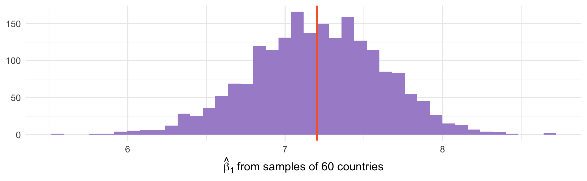
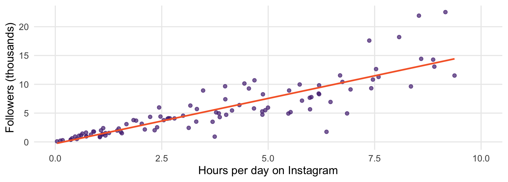
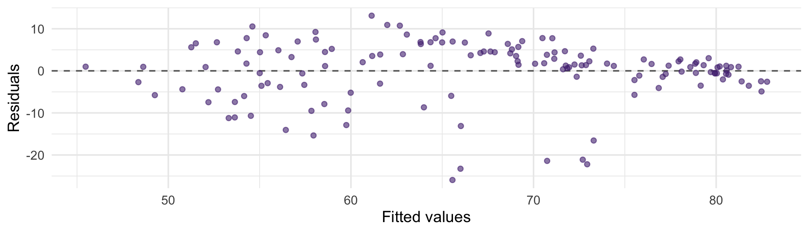
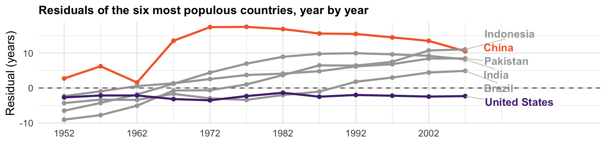
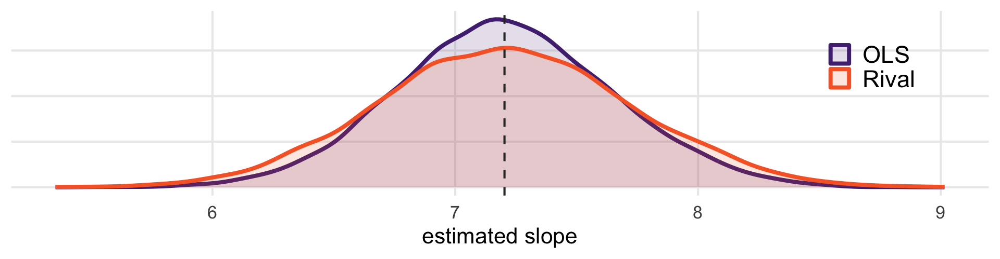

Estimate Std. Error t value Pr(>|t|)
(Intercept) 4.949612 3.8576841 1.283053 2.015936e-01
lgdp 7.202802 0.4423393 16.283430 4.115370e-34Where standard errors come from, and when they are wrong
We can fit a line and interpret its slope
\(\hat{\beta}_1\) is computed from a sample, so it is a random variable with a sampling distribution
Everything we built for the sample mean — sampling distributions, standard errors, hypothesis tests — applies to a regression coefficient.
Draw a different sample of countries and you get a different slope
So \(\hat{\beta}_1\) has a center, a spread, and a shape — exactly like \(\bar{X}\)
Under the standard assumptions it is unbiased: \(E[\hat{\beta}_1] = \beta_1\)

2,000 subsamples of 60 countries. Orange is the population level slope.
Last class we showed \(\hat{\beta}_1 = \beta_1 + \dfrac{\sum_i d_i \varepsilon_i}{\sum_i d_i^{2}}\), with \(d_i = x_i - \bar{x}\).
Only the second term is random, so we need its variance. Using \(\text{Var}(cZ) = c^{2}\text{Var}(Z)\) and adding variances across independent errors:
\[\text{Var}(\hat{\beta}_1) = \frac{\sum_i d_i^{2}\,\text{Var}(\varepsilon_i)}{\left(\sum_i d_i^{2}\right)^{2}}\]
If every error has the same variance \(\sigma_\varepsilon^{2}\) (homoskedasticity), it factors out:
\[\text{Var}(\hat{\beta}_1) = \frac{\sigma_\varepsilon^{2} \sum_i d_i^{2}}{\left(\sum_i d_i^{2}\right)^{2}} = \frac{\sigma_\varepsilon^{2}}{\sum_i d_i^{2}}\]
Taking the square root:
\[SE(\hat{\beta}_1) = \frac{\sigma_\varepsilon}{\sqrt{\sum_i (x_i - \bar{x})^2}}\]
This relies on two assumptions: Independence let us add the variances; homoskedasticity let us factor \(\sigma_\varepsilon^2\) out. If these don’t hold, our standard errors are wrong.
Numerator: residual spread. Noisier outcomes → less precision.
Denominator: how much \(X\) varies. More spread in the predictor → more precision.
That second point is not obvious and it matters: a predictor with little variation cannot be estimated precisely, no matter how large your sample.
If everyone in your sample has nearly the same income, you cannot learn much about income’s effect
Experiments deliberately push \(X\) to extremes for this reason
Explains why a variable can be “insignificant” simply because it barely moves in your data
An insignificant coefficient is not evidence of no relationship. It can be evidence of insufficient variation.
Estimate Std. Error t value Pr(>|t|)
(Intercept) 4.949612 3.8576841 1.283053 2.015936e-01
lgdp 7.202802 0.4423393 16.283430 4.115370e-34Linearity — the CEF really is (approximately) a line
Independence — observations do not inform each other
Homoskedasticity — residual variance is constant across \(X\)
No perfect collinearity — predictors are not exact combinations of each other
Normality of errors is not required for unbiasedness, and not required for inference in large samples. The CLT handles it.
Independence — violations can make standard errors wildly too small. Serious.
Linearity — violations bias the estimate itself. Serious, and fixable with transformations.
Homoskedasticity — violations do not bias \(\hat{\beta}\), only its standard error. Fixable with robust standard errors.
# Simulated users: most spend little time on Instagram, a few spend a lot.
# Followers are in thousands: everyone starts from 10 (0.01), plus 1,500 per daily hour.
# The noise grows in proportion to hours: heavy users are hit or miss.
draw_followers <- function(hours) {
0.01 + 1.5 * hours + rnorm(length(hours), mean = 0, sd = 0.6 * hours)
}
set.seed(30317)
hours <- c(runif(40, 0, 2.5), runif(30, 2.5, 5), runif(30, 5, 10))
insta <- tibble(hours, followers = draw_followers(hours))
heavy <- insta$followers[insta$hours > 5]
ggplot(insta, aes(hours, followers)) +
geom_point(color = "#522D80", alpha = .7, size = 2) +
geom_smooth(method = "lm", formula = y ~ x, se = FALSE, color = "#F66733", linewidth = 1.1) +
scale_x_continuous(limits = c(0, 10), breaks = seq(0, 10, 2.5)) +
labs(x = "Hours per day on Instagram", y = "Followers (thousands)") +
theme_minimal(base_size = 16) +
theme(panel.grid.minor = element_blank())
Light users all sit close to the line. Heavy users (5+ hours) range from 1.8 to 22.5 thousand followers. The spread of the errors grows with \(X\).
Hold those 100 users’ hours fixed and redraw their followers 5,000 times. The true slope is 1.5.
# Both standard-error formulas, written out for one predictor (d = x minus its mean):
# classical: assumes every error has the same variance
# robust (HC1): lets each squared residual stand in for its own error's variance
d <- hours - mean(hours); n <- length(hours)
set.seed(8410)
sims <- replicate(5000, {
y <- draw_followers(hours)
b <- sum(d * y) / sum(d^2)
e <- y - mean(y) - b * d # residuals
c(slope = b,
classical = sqrt(sum(e^2) / (n - 2) / sum(d^2)),
robust = sqrt(sum(d^2 * e^2) / sum(d^2)^2 * n / (n - 2)))
})
true_sd <- sd(sims["slope", ])
crit <- qt(0.975, n - 2)
cover <- function(se) mean(abs(sims["slope", ] - 1.5) <= crit * se)
tibble(` ` = c("Actual spread of the slope (SD)", "Classical SE, on average", "Robust SE, on average"),
Value = sprintf("%.3f", c(true_sd, mean(sims["classical", ]), mean(sims["robust", ]))),
`"95%" intervals that cover 1.5` = c("", sprintf("%.0f%%", 100 * cover(sims["classical", ])),
sprintf("%.0f%%", 100 * cover(sims["robust", ])))) |>
knitr::kable(align = "lrr")| Value | “95%” intervals that cover 1.5 | |
|---|---|---|
| Actual spread of the slope (SD) | 0.141 | |
| Classical SE, on average | 0.104 | 85% |
| Robust SE, on average | 0.134 | 93% |
The slope is fine: it averages 1.50. Heteroskedasticity does not bias it.
The classical SE is 26% too small. The noisiest users are the heavy users, far from average hours, exactly where a point pulls the slope hardest.
The robust SE plugs each squared residual into the variance formula from before we assumed constant variance

Residual spread is clearly wider at low fitted values. Constant variance fails here — which affects the standard error, not the slope.
Robust (Huber-White) standard errors relax the constant-variance assumption
In much of applied economics and political science they are the default
Clustered standard errors handle the independence violation when observations come in groups
If your data are clustered — students in schools, respondents in districts, country-years — the naive standard error is too small.
The full gapminder panel has 12 observations per country. Treating them as independent is plainly wrong:
library(sandwich); library(lmtest)
panel <- gapminder |> mutate(lgdp = log(gdpPercap))
mp <- lm(lifeExp ~ lgdp, data = panel)
tibble(
`Standard error` = c("Naive (assumes independence)",
"Clustered by country"),
Value = c(round(coeftest(mp)["lgdp", 2], 3),
round(coeftest(mp, vcov = vcovCL(mp, cluster = ~country))["lgdp", 2], 3))
) |> knitr::kable()| Standard error | Value |
|---|---|
| Naive (assumes independence) | 0.149 |
| Clustered by country | 0.357 |
The clustered standard error is about 2.4 times the naive one
The coefficient is unchanged, only our level of confidence moves
We had 1,704 rows but only 142 countries. The naive \(t\)-statistic was inflated by a factor of 2.4.

Misses repeat: China is above the line in 12 of 12 years, the US below in 12 of 12; 43 of 142 countries never cross it
Robust SEs square each observation’s contribution separately. Clustered SEs add up each country’s first, then square, so same-sign misses pile up instead of cancelling
Robust alone barely moves it (0.147 vs 0.149): the problem is errors that move together
1,704 rows, but about as much information as 296 independent ones.
Cluster at the level at which treatment was assigned, or at which sampling happened
Students in classrooms → cluster by classroom. Country-years → cluster by country.
Too few clusters (fewer than about 40) and the correction itself becomes unreliable
Fit the model as usual with lm(). Then give coeftest() the model object:
t test of coefficients:
Estimate Std. Error t value Pr(>|t|)
(Intercept) -9.10089 2.92807 -3.1082 0.001914 **
lgdp 8.40508 0.35673 23.5612 < 2.2e-16 ***
---
Signif. codes: 0 '***' 0.001 '**' 0.01 '*' 0.05 '.' 0.1 ' ' 1vcovCL() from sandwich builds the clustered variance; cluster = ~country names the grouping variable
coeftest() from lmtest reprints the coefficient table with those standard errors. For intervals, coefci(mp, vcov. = vcovCL(mp, cluster = ~country)).
Start from the slope formula, with \(d_i = x_i - \bar{x}\) (distance from the mean):
\[\hat{\beta}_1 = \frac{\sum_i d_i\,(Y_i - \bar{Y})}{\sum_j d_j^{2}} = \frac{\sum_i d_i Y_i}{\sum_j d_j^{2}}\]
Why the \(\bar{Y}\) disappears: it contributes \(\bar{Y}\sum_i d_i\), and deviations from a mean always sum to zero.
The denominator is one fixed number, so move it inside the sum. Each \(Y_i\) gets its own weight:
\[\hat{\beta}_1 = \sum_i \underbrace{\frac{d_i}{\sum_j d_j^{2}}}_{w_i}\; Y_i \;=\; \sum_i w_i Y_i\]
The weights use only the \(x\)’s. Each \(Y_i\) enters once, multiplied by a fixed number. That is what “linear” means.
Five observations at \(x = 1, \ldots, 5\), so \(\bar{x} = 3\) and \(\sum_j d_j^{2} = 4 + 1 + 0 + 1 + 4 = 10\):
| \(x_i\) | 1 | 2 | 3 | 4 | 5 |
|---|---|---|---|---|---|
| \(d_i\) | \(-2\) | \(-1\) | \(0\) | \(1\) | \(2\) |
| \(w_i = d_i / 10\) | \(-0.2\) | \(-0.1\) | \(0\) | \(0.1\) | \(0.2\) |
\[\hat{\beta}_1 = -0.2\,Y_1 \;-\; 0.1\,Y_2 \;+\; 0 \cdot Y_3 \;+\; 0.1\,Y_4 \;+\; 0.2\,Y_5\]
Points right of \(\bar{x}\) push the slope up, points to the left push it down: the slope contrasts high-\(x\) and low-\(x\) outcomes
The farther from \(\bar{x}\), the bigger the weight. The middle point gets zero.
Check: if \(Y_i = 2x_i\) exactly, \(\hat{\beta}_1 = -0.4 - 0.4 + 0 + 0.8 + 2.0 = 2\)
Under our assumptions from before (Independence, Linearity, Homoskedasticity), consider every estimator of \(\beta_1\) that is
linear: a weighted sum \(\sum_i c_i Y_i\), with weights that depend only on the \(x\)’s
unbiased: its expected value is \(\beta_1\), whatever the true \(\beta_0\) and \(\beta_1\)
Among all of them, OLS has the smallest variance. It is BLUE: the Best Linear Unbiased Estimator.
OLS is one of them: linear, with the weights \(w_i\) we just saw, and unbiased.
Split the countries at the median of log GDP and compare the two halves:
\[\tilde{\beta}_1 = \frac{\bar{Y}_{\text{high}} - \bar{Y}_{\text{low}}}{\bar{x}_{\text{high}} - \bar{x}_{\text{low}}}\]
Linear: each \(Y_i\) gets weight \(\pm\dfrac{2/n}{\bar{x}_{\text{high}} - \bar{x}_{\text{low}}}\), which depends only on the \(x\)’s
Unbiased: the true line makes \(\bar{Y}_{\text{high}} - \bar{Y}_{\text{low}}\) equal \(\beta_1(\bar{x}_{\text{high}} - \bar{x}_{\text{low}})\), plus noise that averages to zero
A perfectly sensible estimator. Gauss-Markov says it cannot beat OLS.
# Hold the 142 countries' incomes fixed; each draw adds new errors to the fitted line.
x <- g07$lgdp
high <- x > median(x)
w <- (x - mean(x)) / sum((x - mean(x))^2) # OLS weights
cw <- ifelse(high, 1 / sum(high), -1 / sum(!high)) /
(mean(x[high]) - mean(x[!high])) # the rival's weights
set.seed(8410)
sims <- replicate(5000, {
y <- coef(m1)[1] + coef(m1)[2] * x + rnorm(length(x), 0, sigma(m1))
c(OLS = sum(w * y), Rival = sum(cw * y)) # both are weighted sums of y
})
sd_ols <- sd(sims["OLS", ]); sd_riv <- sd(sims["Rival", ])
var_ratio <- sd_riv^2 / sd_ols^2
as_tibble(t(sims)) |>
pivot_longer(everything(), names_to = "estimator") |>
ggplot(aes(value, color = estimator, fill = estimator)) +
geom_density(alpha = .15, linewidth = 1.4) +
geom_vline(xintercept = coef(m1)[2], color = "grey20", linetype = "dashed") +
scale_color_manual(values = c(OLS = "#522D80", Rival = "#F66733")) +
scale_fill_manual(values = c(OLS = "#522D80", Rival = "#F66733")) +
labs(x = "estimated slope", y = NULL, color = NULL, fill = NULL) +
theme_minimal(base_size = 16) +
theme(axis.text.y = element_blank(), panel.grid.minor = element_blank(),
legend.position = "inside", legend.position.inside = c(0.88, 0.7),
legend.text = element_text(size = 17))
Both center on the true slope (dashed): they average 7.20 and 7.20
The rival is wider: SD 0.515 vs. 0.442. Its variance is 36% larger, as if it had thrown away 26% of the countries.
Take any linear estimator \(\tilde{\beta}_1 = \sum_i c_i Y_i\) and substitute \(Y_i = \beta_0 + \beta_1 x_i + \varepsilon_i\):
\[E[\tilde{\beta}_1] = \beta_0 \sum_i c_i \;+\; \beta_1 \sum_i c_i x_i\]
Unbiased for every possible \(\beta_0\) and \(\beta_1\) forces two constraints: \(\sum_i c_i = 0\) and \(\sum_i c_i x_i = 1\). The OLS weights \(w_i\) satisfy both.
Write the rival’s weights as OLS plus a difference, \(c_i = w_i + g_i\). Both sets of weights meet the constraints, so \(\sum_i g_i = 0\) and \(\sum_i g_i x_i = 0\). Therefore
\[\sum_i w_i g_i = \frac{\sum_i d_i g_i}{\sum_j d_j^{2}} = \frac{\sum_i g_i x_i - \bar{x} \sum_i g_i}{\sum_j d_j^{2}} = 0\]
The difference is orthogonal to the OLS weights.
With independent, equal-variance errors, the same steps that gave us the standard error give \(\text{Var}(\tilde{\beta}_1) = \sigma_\varepsilon^{2} \sum_i c_i^{2}\). Expand the square:
\[\text{Var}(\tilde{\beta}_1) = \sigma_\varepsilon^{2}\sum_i (w_i + g_i)^{2} = \underbrace{\sigma_\varepsilon^{2}\sum_i w_i^{2}}_{\text{Var}(\hat{\beta}_1)} \;+\; \sigma_\varepsilon^{2}\sum_i g_i^{2} \;+\; \underbrace{2\sigma_\varepsilon^{2}\sum_i w_i g_i}_{=\;0}\]
\[\text{Var}(\tilde{\beta}_1) \;=\; \text{Var}(\hat{\beta}_1) + \sigma_\varepsilon^{2}\sum_i g_i^{2} \;\geq\; \text{Var}(\hat{\beta}_1)\]
Any departure from the OLS weights adds variance and buys nothing. Equality only if every \(g_i = 0\), i.e. the rival is OLS.
Where the assumptions entered: linearity and mean-zero errors gave the constraints; independence and constant variance gave \(\sigma_\varepsilon^{2}\sum_i c_i^{2}\)
Nothing about causality. It is the best estimate of the slope in the model, not of an effect.
Nothing about normality. No distribution appears anywhere in the proof.
“Best” only among linear and unbiased estimators. Biased ones can beat it on total error.
If errors are heteroskedastic, OLS stays unbiased but is no longer best
Recall the bias-variance tradeoff: accepting bias to cut variance is often a good trade. Gauss-Markov does not forbid it; it just does not cover it.
Fit lifeExp ~ lgdp on Africa only. Compare the standard error to the full-sample one. Why is it larger?
Restrict to countries with log GDP between 8 and 9 and refit. What happened to the standard error, and which term in the formula explains it?
Plot residuals against fitted values for lifeExp ~ gdpPercap (unlogged). What assumption is violated?
A colleague reports \(p = 0.60\) on a variable that barely varies in their sample. What should you ask them?
Read: Gelman, Hill and Vehtari, Ch. 10; Huntington-Klein, Ch. 4
Next class: multiple regression